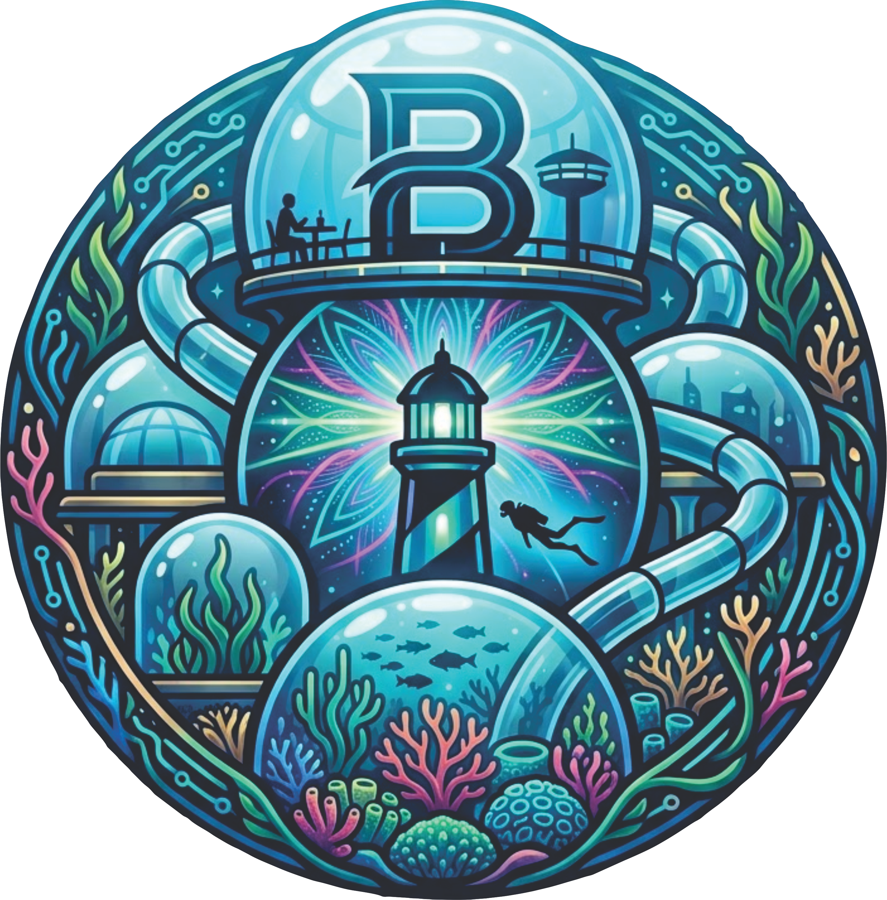

Una ciudad submarina
Descubrí cómo funciona la vida dentro de las cúpulas de Bermudia.
Conocer la ciudad
Viaja profundo, viaja a Bermudia
Bermudia es una ciudad desarrollada bajo el océano gracias al avance de la tecnología marina.
Está compuesta por un sistema de cúpulas interconectadas mediante transportes subacuáticos, y se destaca por su entorno único, albergando una flora y fauna marina verdaderamente extravagante.
Descubrí cómo funciona la vida dentro de las cúpulas de Bermudia.
Conocer la ciudadExplorá las distintas actividades y experiencias que ofrece nuestra ciudad.
Ver actividades Ver lugares de interésConocé nuestras tradiciones, celebraciones y eventos especiales.
Ver cultura Ver eventos